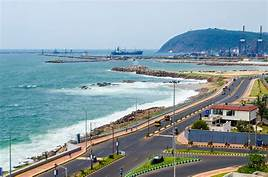
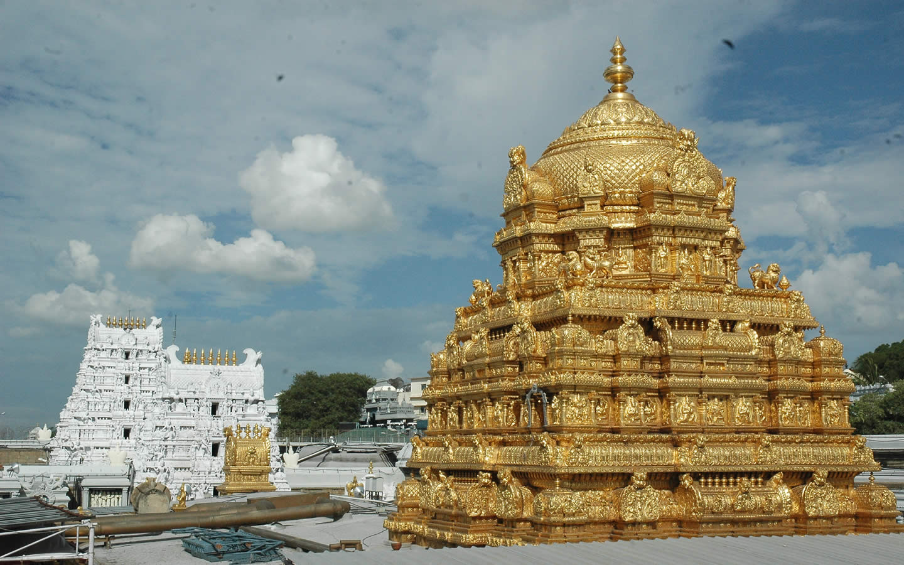
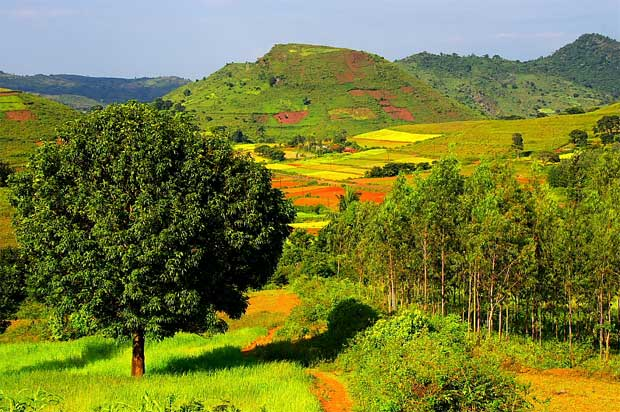

Andhra Pradesh
- Places to visit in AP.
- 1.Amaravathi
- 2.Vizag
- 3.Vijayawada
- 4.Tirupati
- 5.Araku
- 6.Ananthagiri Hills
1.Amaravathi

Visakhapatnam, also commonly known as Vizag, is one of the oldest port cities in the country. Situated in the heart of Andhra Pradesh, Visakhapatnam is known for its picturesque beaches and serene landscape, as well as a rich cultural past. The port of Visakhapatnam is renowned for being home to the. Best Time: September to March
2.Vizag

3.Vijayawada

Situated in the Chittoor district of Andhra Pradesh, Tirupati is known for Lord Venkateshwara Temple, one of the most visited pilgrimage centres in the country. Tirumala is one of the seven hills in Tirupati, where the main temple is located. The temple is believed to be placed where Lord Venka...
Best Time: September to March
4.Tirupati

Araku Valley is a comparatively unexplored hill station mostly visited by locals as a weekend getaway and is situated some 120 kilometres away from Vishakhapatnam. If you're a tourist looking for exclusivity and tranquillity, Vistadome train leaves Vishakhapatnam at 6.50 AM, making way through 58 tu...